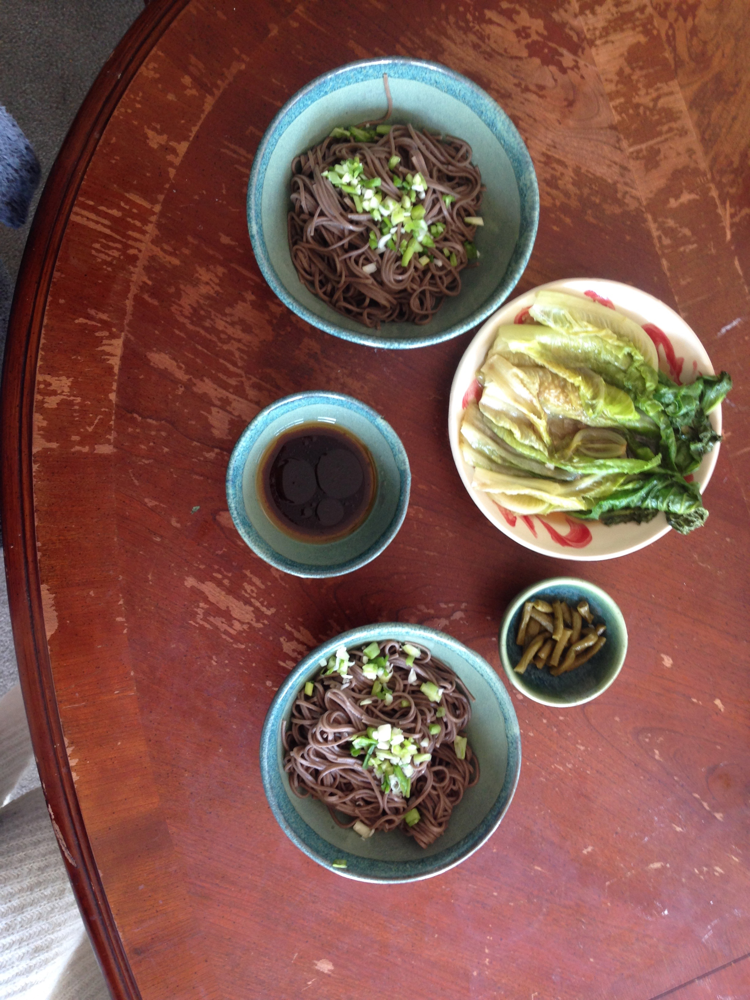

cold soba
a nice slow breakfast on a hot day.
- soba noodles

- green onions
- sesame oil

- sesame seeds
- soba sauce (optional)

- bring water to the boil and cook soba for around 4 minutes. make sure the noodles have enough space, and when straining rinse hard with cold water to stop them becoming sticky
- drizzle with sesame oil (and a little light soy if you fancy it), and top with sesame seeds and diced green onions. serve either with soba sauce, or soy mixed with dashi and mirin.
-
makes a great breakfast with:
- tea egg / fried egg
- fried greens (esp fried lettuce!!)

- chopped spring onions